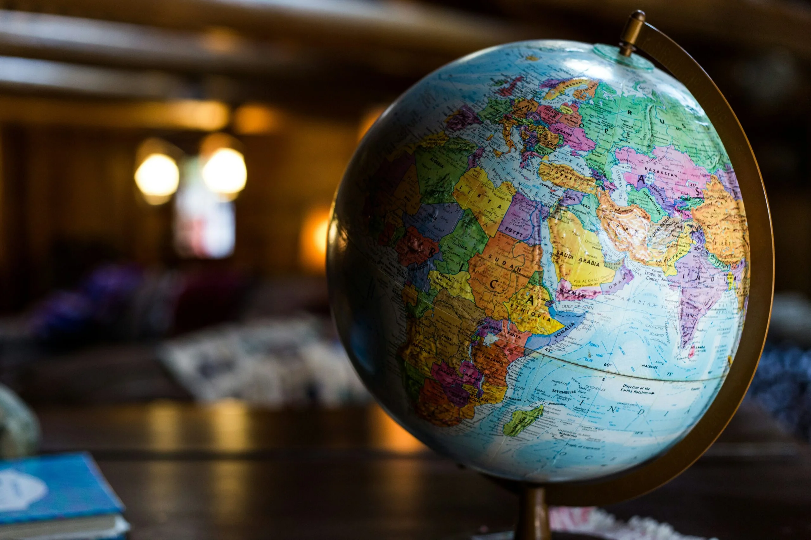
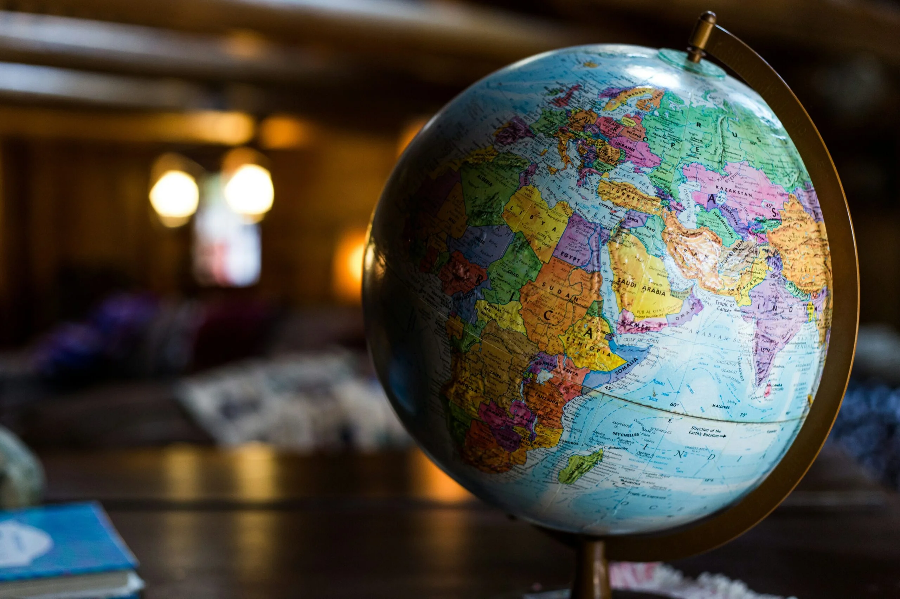

1. Tanpa Kemiskinan
SDG 1 bertujuan untuk menhapus kemiskinan di segala tempat. Indonesia masih menghadapi SDG 1 sebagai tantangan dikarenakan perbedaan pendapatan ekonomi dan keterbatasan lapangan kerja di beberapa daerah. Walau sudah adanya beberapa program bantuan sosial yang mendukung.
2. Tanpa Kelaparan
SDG 2 berfokus pada pemenuhan kebutuhan gizi yang cukup bagi seluruh masyarakat. Indonesia masih mengalami masalah kurangnya akses pangan di beberapa wilayah. Pemerintah memperkuat program gizi dan pendidikan nutrisi. Kerja sama antara pemerintah, petani, dan masyarakat sangat penting untuk mencapai target ini.
3. Kesehatan & Kesejahteraan
SDG 3 bertujuan untuk meningkatkan kesehatan dan kesejahteraan masyarakat. Tantangan yang dihadapi Indonesia dikarenakan layanan kesehatan yang belum merata, penyakit menular, serta masalah gizi.
4. Pendidikan Berkualitas
SDG 4 berfokus pada pendidikan yang berkualitas bagi semua. Indonesia masih menghadapi masalah kesenjangan fasilitas sekolah, kualitas guru, serta angka putus sekolah di jenjang tertentu. Pemerintah berupaya meningkatkan sarana belajar dan memperluas program bantuan pendidikan. Peran masyarakat juga penting dalam mendukung kegiatan belajar dan pemerataan pendidikan.
5. Kesetaraan Gender
SDG 5 bertujuan menjamin kesetaraan hak antara perempuan dan laki-laki. Di Indonesia, beberapa tantangan masih muncul seperti keterbatasan akses pendidikan atau pekerjaan bagi perempuan di daerah tertentu. Dukungan keluarga dan masyarakat sangat penting untuk menghapus kesenjangan gender.
6. Air Bersih & Sanitasi Layak
SDG 6 bertujuan untuk memastikan akses air bersih dan sanitasi aman bagi semua. Indonesia menghadapi tantangan seperti kualitas air yang buruk dan kurangnya fasilitas sanitasi di beberapa daerah pedalaman. Pemerintah melakukan pembangunan jaringan air bersih dan edukasi kebersihan lingkungan.
7. Energi Bersih & Terjangkau
SDG 7 menekankan pentingnya energi ramah lingkungan dan dapat diakses dimanapun. Indonesia terus mengembangkan energi terbarukan seperti tenaga surya, air, dan angin. Namun, energi yang merata masih menjadi tantangan di wilayah terpencil.
8. Pekerjaan Layak & Pertumbuhan Ekonomi
SDG 8 mendorong pertumbuhan ekonomi serta peluang pekerjaan yang layak. Indonesia menghadapi masalah pengangguran, terutama di kalangan muda. Pemerintah memperluas pelatihan keterampilan dan mendorong UMKM untuk dapat berkembang.
9. Industri, Inovasi & Infrastruktur
SDG 9 berfokus pada pembangunan infrastruktur, teknologi, dan inovasi. Indonesia perlu meningkatkan kualitas jalan, transportasi di daerah terpencil. Pemerintah melakukan pembangunan besar-besaran untuk memperkuat perekonomian.
10. Berkurangnya Kesenjangan
SDG 10 bertujuan untuk mengurangi kesenjangan dalam berbagai aspek. Indonesia masih menghadapi kesenjangan ekonomi, pendidikan, dan layanan kesehatan antara kota dan desa. Program bantuan sosial dan pemerataan pembangunan terus dilakukan pemerintah.
11. Kota dan Permukiman Berkelanjutan
SDG 11 menekankan pentingnya kota yang aman, nyaman, dan berkelanjutan. Indonesia menghadapi masalah seperti kemacetan, polusi udara, dan pemukiman yang bermasalah.
12. Konsumsi dan Produksi yang Bertanggung Jawab
SDG 12 bertujuan mengurangi limbah dan mendorong penggunaan sumber daya. Indonesia masih menghadapi masalah sampah plastik dan konsumsi yang boros. Pemerintah meningkatkan pengelolaan sampah dan kampanye daur ulang.
13. Penanganan Perubahan Iklim
SDG 13 menekankan pentingnya tindakan cepat menghadapi perubahan iklim. Indonesia rentan terhadap bencana seperti banjir, kebakaran, dan lain-lain. Pemerintah dapat melakukan penanaman pohon, pengurangan emisi, serta berbagai aktivitas lainnya.
14. Ekosistem Lautan
SDG 14 fokus pada perlindungan ekosistem laut. Indonesia menghadapi ancaman pencemaran laut seperti penangkapan ikan berlebihan dan kerusakan di laut.
15. Ekosistem Daratan
SDG 15 bertujuan melindungi bagian daratan. Indonesia mengalami adanya kerusakan habitat satwa. Pemerintah telah menjalani reboisasi untuk memperkuat perlindungan satwa dan hutan.
16. Perdamaian, Keadilan, dan Kelembagaan yang Tangguh
SDG 16 menekankan pentingnya masyarakat yang damai, hukum yang adil, dan lembaga yang terlihat jelas. Indonesia masih menghadapi masalah korupsi, kekerasan, dan konflik sosial. Pemerintah dapat lebih memperkuat hukum agar mengurangi hal-hal yang tidak diinginkan terjadi.
17. Kemitraan untuk Mencapai Tujuan
SDG 17 menekankan kerja sama antara pemerintah dan masyarakat untuk mencapai pembangunan berkelanjutan.
.png)

 
